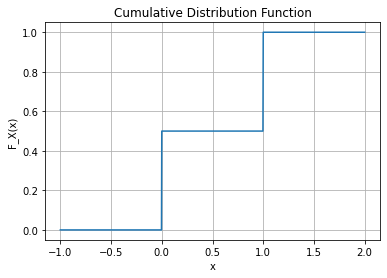
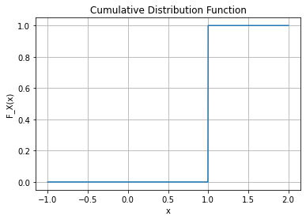
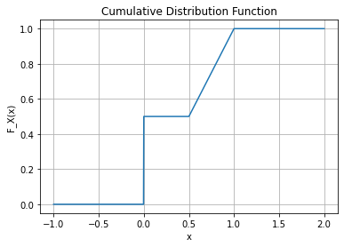

import numpy as np
import matplotlib.pyplot as plt14wk: 이산형과 연속형의 통합
2023-06-06
강의 영상
youtube: https://www.youtube.com/playlist?list=PLQqh36zP38-wThZpnzJAP_aOtJzBl1Ij
Import
일반화된 밀도함수
- 라돈니코딤 정리는 꼭 르벡메져일 경우에만 성립하는 것이 아니다.
이산확률변수
- 예제1 – 베르누이 (with 카운팅메져)
아래와 같은 함수를 고려하자.
\[F_X(x) = \begin{cases} 0 & x<0 \\ \frac{1}{2} & 0 \leq x <1 \\ 1 & x \geq 1 \end{cases}\]
def F_X(x):
if x < 0:
return 0
elif 0 <= x < 1:
return 1/2
else:
return 1
# 그래프를 그릴 x 범위 설정
x = np.linspace(-1, 2, 1000)
# 누적분포함수 계산
y = [F_X(val) for val in x]
# 그래프 그리기
plt.plot(x, y)
plt.xlabel('x')
plt.ylabel('F_X(x)')
plt.title('Cumulative Distribution Function')
plt.grid(True)
이제 \(S=\{0,1\}\), \({\cal S}=\{\emptyset, \{0\},\{1\},\{1,2\}\}\)로 구성된 measurable space \((S,{\cal S})\)를 생각하자. 함수 \(\tilde{\mu}_X: {\cal S} \to [0,1]\)를 아래와 같이 정의하면
- \(\tilde{\mu}_X(\emptyset)= 0\)
- \(\tilde{\mu}_X(\{0\})= \frac{1}{2}\)
- \(\tilde{\mu}_X(\{1\})= \frac{1}{2}\)
- \(\tilde{\mu}_X(\{0,1\})= 1\)
서연 필기
- \(\tilde{\mu}_X(\emptyset)= 0\) \(\rightarrow\) \(P(\emptyset)\)
- \(\tilde{\mu}_X(\{0\})= \frac{1}{2}\) \(\rightarrow\) \(P(H)\)
- \(\tilde{\mu}_X(\{1\})= \frac{1}{2}\) \(\rightarrow\) \(P(T)\)
- \(\tilde{\mu}_X(\{0,1\})= 1\) \(\rightarrow\) \(P(\Omega)\)
\(\to\) \(mu_x : \cal{R} \to [0,1]\)으로 착각할 수 있지만 여기서는 \(\cal{S} \to [0,1]\)로 정의하였으므로 다르다.
함수 \(\tilde{\mu}_X\)는 \((S,{\cal S})\)에서의 메져가 되며, 이것은 \(F_X\)에 대응하는 분포 \({\mu}_X\)와 같은 역할을 한다. 이제 measurable space \((S,{\cal S})\)에 대하여 아래와 같은 함수 \(\#: {\cal S} \to \mathbb{R}\)을 고려하자.
- \(\#(\emptyset)=0\)
- \(\#(\{0\})= 1\)
- \(\#(\{1\})= 1\)
- \(\#(\{0,1\})= 2\)
서연 필기
단순히 말하면 \(\#(A)\) = 집합 \(A\)의 원소 수라고 할 수 있다.
이때 함수 \(\#\)은 \((S,{\cal S})\) 에서의 메져가 되며, 이러한 메져를 특별히 카운팅메져(counting measure) 라고 한다. 이제 아래의 함수 \(f_X:S \to \mathbb{R}\)를 고려하자.
- \(f_X(0)=\frac{1}{2}\)
- \(f_X(1)=\frac{1}{2}\)
함수 \(f_X\)는 카운팅메져 \(\#\)에 대한 \(\tilde{\mu}_X\)의 라돈니코딤 도함수임을 보여라.
(해설)
- \(\tilde{\mu}_X\), \(\#\)는 모두 \((S,{\cal S})\) 에서의 \(\sigma\)-finite 메져이다.
- \(\tilde{\mu}_X << \#\)이 성립한다. 따라서 적당한 \({\cal S} - {\cal R}^+\) measurable function이 존재하여 라돈니코딤 도함수의 조건을 만족함을 알 수 있다.
- 우리가 생각하는 후보는 \(f_X\)인데 이것이 만약에 (1) \({\cal S} - {\cal R}^+\) 가측함수이고 (2) 라돈니코딤 도함수의 조건1을 만족한다면 \(f_X\)는 카운팅메져 \(\#\)에 대한 \(\mu\)의 거의 유일한 (w.r.t. \(\#\)) 밀도함수라고 주장할 수 있다.
- \(f_X\)는 \({\cal S} \to {\cal R}^+\) 가측함수이다. (simple function)
- \(\forall B \in {\cal S}: \mu(B)=\int_B f_X d\#=\sum_{x \in B} f_X(x)\) 를 만족한다.
서연 필기
- \(\tilde{\mu}_X\), \(\#\)는 모두 \((S,{\cal S})\) 에서의 \(\sigma\)-finite 메져이다.
- \(\tilde{\mu}_x(S) = 1\)이고, \(\#(S) = 2\)이니까 \(\tilde{\mu}_x, \#(S)\)는 finite msr가 된다. 따라서 \(\sigma\)-finite msr 이다.
- \(\tilde{\mu}_X << \#\)이 성립한다. 따라서 적당한 \({\cal S} - {\cal R}^+\) measurable function이 존재하여 라돈니코딤 도함수의 조건을 만족함을 알 수 있다.
\(\forall B \in \cal{S} : \#(B) = 0 \leftrightarrow \tilde{\mu}_x (B) = 0\)임을 보이면 된다.
\(\cal{S} = \{ \emptyset, \{0\}, \{1\}, \{0,1\} \}\)이 있을때 위의 조건을 만족하는 것은 \(\emptyset\) 뿐이다.
따라서 \(\tilde{\mu}_x (B) = 0\)이 된다.
- 우리가 생각하는 후보는 \(f_X\)인데 이것이 만약에 (1) \({\cal S} - {\cal R}^+\) 가측함수이고 (2) 라돈니코딤 도함수의 조건2을 만족한다면 \(f_X\)는 카운팅메져 \(\#\)에 대한 \(\mu\)의 거의 유일한 (w.r.t. \(\#\)) 밀도함수라고 주장할 수 있다.
- 1,2로 확인 \(\to\) 적당한 가측함수 \(f\)가 존재하여 \(\forall B \in {\cal S}: \mu(B)=\int_B f_X d\#\) \(\dots \star\)을 만족하는 \(f\)가 거의 유일하게 존재한다.
- \({\cal S} - {\cal R}^+\) 가측함수이고 - Check
simple function 이기 때문에 measurable function이다.
\(f_X(0)=\frac{1}{2}\)와 \(f_X(1)=\frac{1}{2}\)는 모두 \(\frac{1}{2}\)로 하나로만 나타나니까 simple function으로 표현 가능
- 라돈니코딤 도함수의 조건3 Check
\(B = \emptyset\) : LHS = 0, RHS = \(\int_{\emptyset} f_X d\#\) = 0
\(B = \{0,1\}\) : LHS = \(\mu(B) = 1\), RHS = \(\int_{\{0,1\}} f_X d\# = \int_{\{0\}} f_X d\# + \int_{\{1\}} f_X d\# = \frac{1}{2} + \frac{1}{2} = 1\)
- \(f(0) \# \{0\} = \frac{1}{2} \times 1 = \frac{1}{2}\)
- \(f(1) \# \{1\} = \frac{1}{2} \times 1 = \frac{1}{2}\)
- \(f_X\)는 \({\cal S} \to {\cal R}^+\) 가측함수이다. (simple function)
- 3에서 확인 가능
- \(\forall B \in {\cal S}: \mu(B)=\int_B f_X d\#=\sum_{x \in B} f_X(x)\) 를 만족한다.
- 3에서 확인 가능
- 예제1에서 제안한 \(f_X\)의 경우 어떠한 의미에서는 밀도함수라고 해석할 수 있다.
- 학부수준의 이해: 이산형확률변수는 확률질량함수를 가지며, 연속형확률변수는 확률밀도함수를 가진다.
- 대학원수준의 이해: 이산형확률변수의 밀도함수는 \(\#\)에 대한 라돈니코딤 도함수로 해석할 수 있으며, 연속형확률변수의 밀도함수는 \(\lambda\)에 대한 라돈니코딤 도함수로 해석할 수 있다.
- 찝찝한점1: 예제1에서는 왜 \(\mu_X\) 대신에 \(\tilde{\mu}_X\)를 사용했을까?
사실 예제1에서의 \(\tilde{\mu}_X\)는 \(F_X\)에 대응하는 distribution \(\mu_X\)와 유사하지만 미세한 차이가 있음
\(\mu_X:{\cal R} \to [0,1]\)
- \(\mu_X(\emptyset)=0\)
- \(\mu_X(\{0\})=\frac{1}{2}\)
- \(\mu_X(\{1\})=\frac{1}{2}\)
- \(\mu_X(\{0,1\})=1\)
- \(\mu_X(B)=0\) , \(B \in {\cal R} - \{0,1\} - \{0\} - \{1\}\)
\(\tilde{\mu}_X:{\cal S} \to [0,1]\)
- \(\tilde{\mu}_X(\emptyset)= 0\)
- \(\tilde{\mu}_X(\{0\})= \frac{1}{2}\)
- \(\tilde{\mu}_X(\{1\})= \frac{1}{2}\)
- \(\tilde{\mu}_X(\{0,1\})= 1\)
- 찝찝한점2: 예제1에서는 왜 \((\mathbb{R},{\cal R})\)를 고려하지 않고 \((S,{\cal S})\)를 고려하였을까?
이건 사실 \(\mu_X\)대신 \(\tilde{\mu}_X\)를 쓴 이유와 연관이 있다. \(\mu_X\)는 \({\cal R}\)에서 정의되고 \(\tilde{\mu}_X\)는 \({\cal S}\)에서 정의되는데 예제에서는 \(\mu_X\)대신 \(\tilde{\mu}_X\)를 썻기 때문에 자연스럽게 \((\mathbb{R}, {\cal R})\) 대신에 \((S,{\cal S})\)를 고려하게 되는 것
- 찝찝한점의 해결:
- 라돈니코딤 도함수의 존재에 필요한 조건 중 하나는 라돈니코딤 도함수를 정의하는 두개의 메져4 \(\sigma\)-finite measure이어야 한다는 것임.
- \(\mu_X,\lambda\) on \((\mathbb{R},{\cal R})\)을 고려 \(\Rightarrow\) \(\mu_X,\lambda\) 은 모두 \((\mathbb{R},{\cal R})\)에서 \(\sigma\)-finite 조건을 만족함.
- \(\tilde{\mu}_X,\#\) on \((S,{\cal S})\)을 고려 \(\Rightarrow\) \(\tilde{\mu}_X,\#\) 은 모두 \((S,{\cal S})\)에서 \(\sigma\)-finite 조건을 만족함.
- \(\mu_X, \#\) on \((\mathbb{R},{\cal R})\)을 고려 \(\Rightarrow\) \(\mu_X\) 는 \((\mathbb{R},{\cal R})\)에서 \(\sigma\)-finite 하지만 \(\#\)는 \((\mathbb{R},{\cal R})\)에서 \(\sigma\)-finite 하지 않음.
따라서, \((\mathbb{R},{\cal R})\)에서의 두 메져 \(\mu_X,\lambda\)를 고려하거나, \((S,{\cal S})\)에서의 두 메져 \(\tilde{\mu}_X,\#\) 를 고려해야 라돈니코딤 도함수를 따져볼 수 있다.
모티브: 그런데 \((S,{\cal S})\) 말고 그냥 \((\mathbb{R},{\cal R})\)에서 적당히 \(\mu_X, \tilde{\#}\)를 고려할 수는 없을까?
서연 필기
의문: \(\tilde{\mu}_X\)대신 \(\mu_X\)를 고려한다면?
\(\mu_X,\lambda\) on \((\mathbb{R},{\cal R})\) 에서 \(\mu_X,\lambda\)가 \(\sigma\)-finite 하다면,
\(\rightarrow\) \(\frac{d\mu_x}{d\lambda} = pdf\)(연속형 확률변수의)의 일반화된 버전
\(\tilde{\mu}_X,\#\) on \((S,{\cal S})\) 에서 \(\tilde{\mu}_X,\#\)가 \(\sigma\)-finite 하다면,
\(\rightarrow\) \(\frac{d \tilde{\mu}_x}{d\#} = pmf\) 로 쓸 수 있지만, 이렇게 쓰지 말고 아래처럼 쓰고 싶다.
\(\mu_X, \#\)5 on \((\mathbb{R},{\cal R})\) 에서 \(\mu_X, \#\)가 \(\sigma\)-finite 하다면,
\(\rightarrow\) \(\frac{d\mu_x}{d \#} = pmf\)
\(\rightarrow\) 하지만, \(\#(\mathbb{R}) = \infty\)이므로 finite 하지 않고 \(\sigma\)-finite 하지 않다.
\(\star\) \(\sigma\)-finite의 조건
\(\lambda\)가 \((\mathbb{R},\cal{R})\)에서 \(\sigma\)-finite하는지 확인
\(\lambda\) is \(\sigma\)-finite msr on \((\mathbb{R},\cal{R})\)인지 보이기.
\(\leftrightarrow\) \(A_1,A_2, \dots\), st (1) \(\cup^\infty_{n=1} A_n = \cal{R}\) & (2) $ (A_n) < , n $를 만족해야 한다.
\(A_n = (-n,n)\)의 열린 구간으로 보면,
\(\cup^\infty_{n=1} A_n = \cal{R}\)은 \(\cup^\infty_{n=1} A_n = \mathbb{R}\)로 만족함을 보임.
$ (A_n) < , n $은 \(\lambda(A_n) = 2n < \infty \forall n \in \mathbb{N}\) 로 만족함을 보임.
\(\rightarrow\) 카운팅 메져 \(\#\)으로 바꾼다면? \(\#(A_n) = \infty\)하여 \((\mathbb{R},\cal{R})\)에서 \(\sigma\)-finite하지 않다.
정리
\(\lambda\)는 \((\mathbb{R},\cal{R})\)에서 \(\sigma\)-finite msr
\(\#\)는 \((\mathbb{R},\cal{R})\)에서 \(\sigma\)-finite msr가 아님
\(\#\)는 \((\mathbb{N},2^{\mathbb{R}})\)에서 \(\sigma\)-finite msr
모티브: 그런데 \((S,{\cal S})\) 말고 그냥 \((\mathbb{R},{\cal R})\)에서 적당히 \(\mu_X, \tilde{\#}\)를 고려할 수는 없을까?
- 예제2 – 베르누이 (with 디렉메져)
아래와 같은 함수를 고려하자.
\[F_X(x) = \begin{cases} 0 & x<0 \\ \frac{1}{2} & 0 \leq x <1 \\ 1 & x \geq 1 \end{cases}\]
def cumulative_distribution(x):
if x < 0:
return 0
elif 0 <= x < 1:
return 1/2
else:
return 1
x = np.linspace(-1, 2, 1000)
y = np.vectorize(cumulative_distribution)(x)
plt.plot(x, y)
plt.xlabel('x')
plt.ylabel('F_X(x)')
plt.title('Cumulative Distribution Function')
plt.grid(True)
\(F_X\)에 대응하는 분포 \(\mu_X:{\cal R} \to [0,1]\)를 고려하자.
- \(\mu_X(\emptyset)=0\)
- \(\mu_X(\{0\})=\frac{1}{2}\)
- \(\mu_X(\{1\})=\frac{1}{2}\)
- \(\mu_X(\{0,1\})=1\)
- \(\mu_X(B)=0\) , \(B \in {\cal R} - \{0,1\} - \{0\} - \{1\}\)
그리고 아래와 같은 메져를 고려하라. \(\#_X: {\cal R} \to \mathbb{N}\) 을 고려하자.
- \(\#_X(\emptyset)=0\)
- \(\#_X(\{0\})=1\)
- \(\#_X(\{1\})=1\)
- \(\#_X(\{0,1\})=2\)
- \(\#_X(B)=0\), \(B \in {\cal R}-\{0,1\}-\{0\}-\{1\}\)
서연 필기
\(X\)가 각각 값이 나올 확률
- \(X = 0\) \(wp = \frac{1}{2}\)
- \(X = 1\) \(wp = \frac{1}{2}\)
\(X\)의 support 인 경우는 1, 아닌 경우는 모두 0
- \(\#_X(\emptyset)=0\)
- \(\#_X(\{0\})=1\)
- \(\#_X(\{1\})=1\)
- \(\#_X(\{0,1\})=2\)
- \(\#_X(B)=0\), \(B \in {\cal R}-\{0,1\}-\{0\}-\{1\}\)
- 즉, 4가지 경우는 \(\#\)와 같고, 그 외의 case는 0으로 정의된다.
- ex) \(\#(\{0,1,2\}) = 3\)이지만 \(\#_X(\{0,1,2\}) = \#_X(\{0,1)\} + \#_X(\{,2\}) = 2+ 0 = 2\)가 된다.
- \(\#_X(\mathbb{R})\)은 \(\sigma\)-finite 하다.
- \(\#_X(\{0,1\}) + \#_X(\mathbb{R} - \{0,1\}) = 2+0 = 2\)이므로 finite 하기 때문에 \(\sigma\)-finite 하다.
- 절대연속이기도 하다.
- \(\forall B \in \cal{R}\)에 대해 \(\#_X(B) = \mu_X(B)= 0\)임을 보이면 되는데, 둘 다 0이라는 값이 나오기 때문에 절대연속 조건 만족한다.
이때 함수 \(\#_X:{\cal R} \to \mathbb{N}\) 는 \((\mathbb{R},{\cal R})\) 에서의 \(\sigma\)-finite 메져가 된다. 또한 \(\mu_X << \#_X\) 가 성립한다.6 이제 아래의 함수 \(f_X:\mathbb{R} \to \mathbb{R}^+\)를 고려하자.
\[f_X(x)=\begin{cases} \frac{1}{2} & x=0,1 \\ 0 & o.w. \end{cases}\]
함수 \(f_X\)는 \({\cal R}-{\cal R}^+\) 가측함수이고 (simple function 이므로)
\[\forall B \in {\cal R}: \mu_X(B)= \int_B fd\#_X\]
를 만족한다. 따라서
\[f_X=\frac{d\mu_X}{d\#_X}\]
이다. 즉 \(f_X\)는 \(\#_X\)에 대한 \(\mu_X\)의 라돈니코딤 도함수로 해석할 수 있다.
서연 필기
\(f_X(x)=\begin{cases} \frac{1}{2} & x=0,1 \\ 0 & o.w. \end{cases}\) 두 경우만 있으므로 simple function 이고 따라서 measurable function이다.
\(\forall B \in {\cal R}: \mu_X(B)= \int_B fd\#_X\)이 성립하는 예제
ex) \(\mu_X(\{0\}) = \int_{\{0\}} f d \#_X = f(0) \#_X(\{0\}) = \frac{1}{2} \times 1 = \frac{1}{2}\)
\(B = (-\infty, 0 ] \cup [1,\infty)\)에 대하여 \(\mu_X(B) = \int_B f d \#_X\)를 만족하는지 따지자.7
\(B = (-\infty,0) \cup \{0\} \cup \{1\} \cup (1,\infty) = B_1 \uplus\{0\} \uplus \{1\} \uplus B_2\)
LHS = \(\mu_X(\{0\} ).+ \mu_X(\{1\})\)
RHS = \(f(0) \#(\{0\} + f(1)\#(\{1\})\)
- 정의 (디렉메져): 가측공간 \((\mathbb{R}, {\cal R})\)에서 디렉메져 \(\delta_x\)는
\[\forall B \in {\cal R}: ~\delta_{x}(B)=\mathbb{1}_B(x)=\mathbb{1}(x \in B)\]
로 정의되는 메져이다.
- 디랙메져의 표현법에 따르면 예제2의 경우 \(\#_X := \delta_0 + \delta_1\) 로 표현할 수 있다. 여기에서 \(\delta_x\)는 \((\mathbb{R},{\cal R})\)에서의 디랙메져이다.
- 꼭 베르누이와 같은 상황이 아니라도 임의의 이산확률변수 \(X\)에 대한 분포 \(\mu_X\)를 dominating하는 적절한 \(\sigma\)-finite한 메져 \(\#_X\)를 \((\mathbb{R}, {\cal R})\)에서 정의할 수 있다. 예를들면 주사위예제의 경우
\[\#_X = \delta_1+\delta_2+\delta_3+\delta_4+\delta_5+\delta_6\]
와 같은 방식으로 정의할 수 있다. 즉 임의의 이산확률변수 \(X\)에 대하여 아래를 만족하는 \(\#_X\)를 항상 잡을 수 있다.
- \(\#_X\) is \(\sigma\)-finite
- \(\mu_X << \#_X\)
따라서 \(\frac{d\mu_X}{d\#_X}\)는 언제나 잘 정의되며 이는 우리가 알고 있는 pmf의 정의와 일치한다.
서연 필기
디렉메져, \(\cal{S}_x(B) \to 0,1\)
- \(x\in B\) \(\rightarrow 1\)
- \(x\notin B\) \(\rightarrow 0\)
- \(\delta_0(\{0\}) = 1\), 0이 포함되니까 1
- \(\delta_0(\{1\}) = 0\), 0이 포함되지 않으니까 0
- \(\delta_0([0,1]) = 1\), 0이 포함되니까 1
- \(\delta_0((0,1)) = 0\), 0이 포함되지 않으니까 0
따라서 위의 \(\#_X\)를 디렉메져로 정의한다면, \(\#_X: \delta_0 + \delta_1\)
- \((\delta_0 + \delta_1)(\{0,1\}) = \delta_0 (\{0,1\}) + \delta_1(\{0,1\}) = 1+1=2\)
- 결국 이산형 확률변수의 밀도함수를 설명하는 방법은 크게 3가지가 있는 셈이다.
- 이산형확률변수는 밀도함수가 없다.
- 이산형확률변수의 밀도함수는 \(\frac{d}{d\#}\tilde{\mu}_X\) 으로 정의할 수 있다.
- 이산형확률변수의 밀도함수는 \(\frac{d}{d\#_X}\mu_X\) 으로 정의할 수 있다.
설명1,2,3은 각각의 장단점이 있다.
설명1: 라돈니코딤 도함수에 대한 이해가 없어도 된다는 점에서 장점이 있다. (그래서 학부수준에서는 가장 일반적으로 사용하는 설명)
설명2: 연속형은 르벡메져에 대한 라돈니코딤 도함수, 이산형은 카운팅메져에 대한 라돈니코딤 도함수로 구분하여 설명할 수 있다는 점에서는 클리어하지만 분포함수 \(\mu_X\)를 활용하지 못한다는 점과 그에 따라서 이산형 확률변수의 support \(S\)에 맞추어 가측공간 \((S,{\cal S})\)를 재설정해야한다는 불편함이 있다. 이러한 방식으로 유도되는 베르누이 분포의 pmf는 아래와 같이 정의된다.
- \(f_X(x)=p_X(x)=\begin{cases} 1-p & x=0 \\ p & x=1 \end{cases}\)
설명3: 연속형은 르벡메져에 대한 라돈니코딤 도함수, 이산형은 카운팅메져에 대한 라돈니코딤 도함수로 구분하여 설명할 수는 없으며 확률변수 \(X\)에 따라서 \(\#_X\)를 그때 그때 정의해야하는 지저분함이 있다. 하지만 분포함수 \(\mu_X\)를 활용할 수 있고 가측공간 \((\mathbb{R},{\cal R})\)를 그대로 활용한다는 장점이 있다. 이러한 방식으로 유도되는 베르누이분포의 pmf는 아래와 같이 정의된다.
- \(f_X(x)=p_X(x)=\begin{cases} 1-p & x=0 \\ p & x=1 \\ 0 & o.w. \end{cases}\)
여기에서 \(p_X(x)\)는 학부때 배우는 pmf
서연 필기
- 이산형확률변수는 밀도함수가 없다.
- \(\mu_X << \lambda\) \(\mu_X\)가 르벡메져에 대해 \(X\)에 대해 연속이 아니기 때문에 밀도함수가 없다.
- 이산형확률변수의 밀도함수는 \(\frac{d}{d\#}\tilde{\mu}_X\) 으로 정의할 수 있다.
꼭 르벡메져로 볼 필요 없음
카운팅 msr로 보고 \(\tilde{\mu}_X\)로 보겠다.
카운팅 msr를 수정하지 않고 그대로 쓸 수 있다는 장점
\(\mu_X\) 대신 \(\tilde{\mu}\) 써야 한다는 단점
\(\frac{d \tilde{\mu}_X}{d \#_X}\)가 모두 \((\mathbb{S},\cal{S}\)에서 정의되기 때문에 support를 실수 전체로 잡을 필요가 없다.
- 이산형확률변수의 밀도함수는 \(\frac{d}{d\#_X}\mu_X\) 으로 정의할 수 있다.
카운팅 msr로 보고 \(\mu_X\)로 보겠다.
\(\mu_X\) 그대로 쓴다는 장점
카운팅 msr를 수정해야 한다는 단점
\(\frac{d \mu_X}{d \#_X}\)가 모두 \((\mathbb{R},\cal{R}\)에서 정의되기 때문에 support를 실수 전체로 잡아야 한다.
혼합형확률변수
- 예제1: 아래와 같은 분포함수 \(F_X\)를 고려하자.
\[F_X(x) = \begin{cases} 0 & x< 0 \\ \frac{1}{2} & 0 \leq x < \frac{1}{2} \\ x & \frac{1}{2} \leq x \leq 1 \\ 1 & x>1 \end{cases}\]
def cumulative_distribution(x):
result = []
for val in x:
if val < 0:
result.append(0)
elif 0 <= val < 1/2:
result.append(1/2)
elif 1/2 <= val <= 1:
result.append(val)
else:
result.append(1)
return result
x = np.linspace(-1, 2, 1000)
y = cumulative_distribution(x)
plt.plot(x, y)
plt.xlabel('x')
plt.ylabel('F_X(x)')
plt.title('Cumulative Distribution Function')
plt.grid(True)
이 분포함수는 동전을 던져 앞면이 나오면 \(X=0\)으로 결정하고 뒷면이 나오면 균등분포 \([0.5,1]\)에서 확률변수 \(X\)를 생성하는 실험을 상상하면 쉽게 이해할 수 있다. 아래와 같은 함수
\[f_X(x) = \begin{cases} \frac{1}{2} & x=0 \\ 1 & \frac{1}{2} \leq x \leq 1 \\ 0 & o.w. \end{cases}\]
가 \(F_X\)의 밀도함수가 될 수 있음을 설명하라.
(해설)
- \(\nu:= \lambda + \delta_0\) 이라고 정의하자.
- \(\nu\)는 \(\sigma\)-finite 하며 \(\mu_X << \nu\) 를 만족한다.
- 함수 \(f_X(x)\)는 가측함수이며 (simple function) \(\forall B \in {\cal R}\)에 대하여 아래를 만족한다.
\[\mu_X(B)=\int_B f_X d\nu =\int_B f_X d(\lambda+\delta_0)=\int_B f_X d\lambda + \int_B f_X d\delta_0\]
\(B = (-\infty,x]\)와 같은 꼴에서만 성립함을 보이고 나머지는 \(\pi\)-\(\lambda\) thm 쓰면 되죠?
서연 필기
- \(\nu:= \lambda + \delta_0\) 이라고 정의하자.
\(\nu:= \lambda + \delta_0\)의 의미 \(\rightarrow\) \(\forall B \in \cal{R}\): \(\nu(B) = \lambda(B) + \delta_0(B)\)이렇게 더할 것이다는 뜻
- \(\nu\)는 \(\sigma\)-finite 하며 \(\mu_X << \nu\) 를 만족한다.
\(\lambda\)가 finite하고, \(\delta_0\)가 \(\sigma\)-finite 하여 \(\nu\)도 \(\sigma\)-finite 할 것이다.
\(\nu\) is \(\sigma\)-finite on \((\mathbb{R},\cal{R})\)
pf. \(A_n = (-n,n)\) open range로 잡으면, \(\nu(A_n) = \lambda(A_n) + \delta(A_n) = 2n+1\)8
\(\because \forall n \in \mathbb{N}\) \(\nu(A_n) = 2n + 1 < \infty\)
그리고 \(\cup^\infty_{n=1} A_n = \mathbb{R}\) 따라서 \(\sigma\)-finite 하다.
\(\nu(B) = 0 \leftrightarrow \mu_X(B) = 0\)으로 절대연속임을 보이자.
\((\lambda + \delta_0) (B) = 0\)9
\(\lambda(B) + \delta_0(B) = 0\)10
따라서 \(\lambda(B) = 0\) & \(\delta_0(B) = 0\)
\(\mu_X(B) = \mu_X(B - \{0\})\)11 \(+ \mu_X(\{0\})\)12 \(= 0 + 0 = 0\)
- 함수 \(f_X(x)\)는 가측함수이며 (simple function) \(\forall B \in {\cal R}\)에 대하여 아래를 만족한다.
simple function 이기 때문에 가측함수
모든 구간에서 증명이 어려워 특정 집합 \(B = (-\infty,x]\)에서 증명 후 \(\pi-\lambda\)-system 사용하여 증명
\(B = (-\infty,x]\),
\(\mu_X(B) = F_X(x)\)가 됨.
- \(x<0, \mu_X(B) = F_X(x) = 0\)
\(\mu_X(B) = 0\)
\(\int_B f_X d\lambda + \int_B f_X d\delta_0=0\)
\(\rightarrow\) 성립
- \(x=0, F_X(X) = \frac{1}{2}\)
\(\mu_X(B) =F_X(X)= \frac{1}{2}\)
\(\int_{-\infty}^0 f_X d\lambda + \int_{-\infty}^0 f_X d\delta_0 = 0 + \int_{\{0\}} f_X d \delta_0 = f_X(0) \delta_0(\{0\}) = \frac{1}{2} \times 1 = \frac{1}{2}\)
\(\rightarrow\) 성립
- \(0<x<\frac{1}{2}\) , \(F_X(X)= \frac{1}{2}\)
\(\mu_X(B) = F_X(X) = \frac{1}{2}\)
\(\int_{-\infty}^x f_X d\lambda\)13 \(+ \int_{-\infty}^x f_X d\delta_0 = 0 + \int_{\{0\}}^x f_X d\delta_0 = f_X(0) \delta_X(\{0\}) = \frac{1}{2} \times 1 = \frac{1}{2}\)
\(\rightarrow\) 성립
- \(\frac{1}{2} \le x \le 1\) \(F_X(x) = x\)
\(\mu_X(B) = F_X(x) = x\)
\(\int_{-\infty}^x f_X d\lambda + \int_{-\infty} f_X d\delta_0 = \int_{-\infty}^x f_X d\lambda + \frac{1}{2} = \int_{\frac{1}{2}}^1 1 dx + \frac{1}{2} = x - \frac{1}{2} + \frac{1}{2}\)14
\(\rightarrow\) 성립
- \(x>1\) \(F_X(x) = \mu_X(x) = 1\)
\(\mu_X(B) = F_X(x) = 1\)
\(\int_{-\infty}^x f_X d\lambda + \int_{-\infty}^x f_X d\delta_0 = \int_{\frac{1}{2}}^1 1 dx + \frac{1}{2} = \frac{1}{2}+ \frac{1}{2}\)
위의 3에 대한 추가설명.
결국 임의의 \(B=(-\infty,x]\)와 같은 꼴에서 \(\mu_X(B) = \int_Bf_Xd\lambda + \int_B f_Xd\delta_0\) 임을 보이면 된다.
편의상 아래와 같이 정의하자.
- \(LHS = \mu_X(B)\)
- \(RHS_1 = \int_B f_Xd\lambda\)
- \(RHS_2 = \int_B f_Xd\delta_0\)
case1: \(x < 0\)
- \(LHS = F_X(x)=0\)
- \(RHS_1 = 0\)
- \(RHS_2 = 0\)
case2: \(x = 0\)
- \(LHS = F_X(x)=\frac{1}{2}\)
- \(RHS_1 = \int_{-\infty}^0f_X(x)dx = 0\)
- \(RHS_2 = \int_{\{0\}}f_Xd\delta_0 = f_X(0)\delta_0(\{0\}) = \frac{1}{2}\)
case3: \(0<x< \frac{1}{2}\)
- \(LHS = F_X(x)=\frac{1}{2}\)
- \(RHS_1 = \int_{-\infty}^{0}f_X(x)dx+ \int_{0}^{x}f_X(x)dx= 0\)
- \(RHS_2 = \int_{\{0\}}f_Xd\delta_0 = f_X(0)\delta_0(\{0\}) = \frac{1}{2}\)
case4: \(\frac{1}{2}<x< 1\)
- \(LHS = F_X(x)=x\)
- \(RHS_1 =\int_{-\infty}^{1/2}f_X(x)dx+ \int_{1/2}^xf_X(x)dx = \int_{1/2}^xf_X(x)dx=\int_{1/2}^xdx= x-\frac{1}{2}\)
- \(RHS_2 = \int_{\{0\}}f_Xd\delta_0 = f_X(0)\delta_0(\{0\}) = \frac{1}{2}\)
case5: \(x>1\)
- \(LHS = F_X(x)=1\)
- \(RHS_1 =\int_{-\infty}^{1/2}f_X(x)dx+ \int_{1/2}^{1}f_X(x)dx = \int_{1/2}^1f_X(x)dx=\int_{1/2}^1dx= 1-\frac{1}{2}\)
- \(RHS_2 = \int_{\{0\}}f_Xd\delta_0 = f_X(0)\delta_0(\{0\}) = \frac{1}{2}\)
르벡분해정리
- Thm: 분포함수의 정의15를 만족하는 임의의 \(F\)는 항상 아래와 같이 분해가능하다.
\[F = F_{ac}+F_{pp}+F_{sing}\]
여기에서 \(F_{ac}\)는 르벡메져에 대하여 절대연속이고 \(F_{pp}\)는 카운팅메져에 대하여 절대연속이다. 따라서 \(F_{ac}\)와 \(F_{pp}\)는 각각 르벡메져와 카운팅메져에 대응하는 밀도함수가 존재한다. \(F_{sing}\)는 칸토어분포와 같이 밀도함수가 존재하지 않는 경우이다.
여기에서 \(ac\)는 absolutely continuous 의 약자이고, \(pp\) pure point 의 약자이며 \(sing\)은 singular continuous 약자이다.
- 의미: \(F_{ac}\)는 우리가 일반적으로 생각하는 singular하지 않은 연속함수를 상상하면 된다.16 \(F_{pp}\)는 완벽한 불연속이며 오직 jump를 통해서만 증가하는 함수라 생각하면 된다. 즉 우리가 익숙한 이산형확률변수의 cdf를 상상하면 된다.
- 이론: \(F_{pp}\)는 기껏해야 countable한 불연속점을 가진다. (jump 하는 point는 countable이라는 의미, 결국 이산형확률변수의 support는 countable이라는 의미)
- 이론: 분포함수 정의를 만족하는 임의의 \(F\)가 아래와 같다면
\[F=F_{ac}\]
\(F\)에 대응하는 연속형 확률변수 \(X\)가 존재하고 그에 대응하는 pdf가 존재한다.
- 이론: 분포함수 정의를 만족하는 임의의 \(F\)가 아래와 같다면
\[F=F_{pp}\]
\(F\)에 대응하는 이산형 확률변수 \(X\)가 존재하고 그에 대응하는 (일반화된) pdf 혹은 pmf가 존재한다.
- 이론: 분포함수 정의를 만족하는 임의의 \(F\)가 아래와 같다면
\[F=F_{ac}+F_{pp}\]
\(F\)에 대응하는 혼합형 확률변수 \(X\)가 존재하고 그에 대응하는 (일반화된) pdf가 존재한다.
기대값
- 예제1: \((\Omega,{\cal F},P)\)를 확률공간이라고 하고 \(\Omega=\{H,T\}\), \({\cal F}=2^\Omega\), \(P(H)=P(T)=\frac{1}{2}\)라고 하자.17 확률변수 \(X(H)=0\), \(X(T)=1\)를 정의하자. 이 확률변수의 기대값 \(\mathbb{E}(X)\)를 계산하여 보자.
| \(X\) | \(X=0\) | \(X=1\) |
|---|---|---|
| \(P(X=x)\) | \(\frac{1}{2}\) | \(\frac{1}{2}\) |
(풀이)
아래와 같이 계산할 수 있다. (고등학교 수준)
\[\mathbb{E}(X)= 0 \times \frac{1}{2} + 1\times \frac{1}{2}\]
이를 다른표현으로 써보면
- \(\mathbb{E}(X)= 0 \times (P\circ X^{-1})(\{0\}) + 1\times (P\circ X^{-1})(\{1\})\)
- \(\mathbb{E}(X)= 0 \times \mu_X(\{0\}) + 1\times \mu_X(\{1\})\)
- \(\mathbb{E}(X)= \sum_{x=0}^{1} x \times \mu_X(\{x\})\)
- \(\mathbb{E}(X)= \int_{\mathbb{R}} x d\mu_X:=\int_{\mathbb{R}}xdF_X\)
- \(\mathbb{E}(X)= \int_{\mathbb{R}} x \frac{d\mu_X}{d \#_X}d\#_X\)
- \(\mathbb{E}(X)= \int_{\mathbb{R}} x p_X(x) d\#_X\)
- \(\mathbb{E}(X)= \int_{\{0,1\}} x p_X(x) d\#_X\)
- \(\mathbb{E}(X)= \sum_{x=0}^{1} xp_X(x)\)
또는 아래와 같이 볼 수 도 있다.
- \(\mathbb{E}(X)= 0 \times (P\circ X^{-1})(\{0\}) + 1\times (P\circ X^{-1})(\{1\})\)
- \(\mathbb{E}(X)= X(H) \times P(\{H\}) + X(T)\times P(\{T\})\)
- \(\mathbb{E}(X)= \int X dP = \int_{\Omega} X dP = \int_{\omega \in \Omega}X(\omega)dP(\omega)\)
위의 2 \(\to\) 3에 대한 추가설명.
아래와 같은 함수 \(f(x)\)를 다시 고려하자.
\[f(x) = \begin{cases} 1 & \mathbb{Q} \cap [0,1] := A_1 \\ 0 & \mathbb{Q}^c \cap [0,1]: =A_2 \end{cases}\]
이 함수의 밑면적을 계산하기 위해서
- \(\int f d\lambda = 1 \times \lambda(A_1) + 0 \times \lambda(A_2)\)
와 같은 계산을 정의하였다. 이를 다시 평이한 언어로 표현하면
- 적분값 = \(\big(\) \(x \in A_1\)에서의 함수값 \(f(x)\) \(\big)\) \(\times\) \(\big(\) \(A_1\)을 \(\lambda\)로 잰 길이\(\big)\) + \(\big(\) \(x \in A_2\)에서의 함수값 \(f(x)\)\(\big)\) \(\times\) \(\big(\) \(A_2\)을 \(\lambda\)로 잰 길이\(\big)\)
와 같은 방식으로 서술할 수 있다. 이제 가측함수 \(f\)에 대응하는 가측함수 \(X\)와, 메져 \(\lambda\)에 대응하는 메져 \(P\)를 고려하자. 즉
- \(f: [0,1] \to \mathbb{R}\) 인 measurable function such that \(f(x) = \begin{cases} 1 & \mathbb{Q} \cap [0,1] := A_1 \\ 0 & \mathbb{Q}^c \cap [0,1]: =A_2 \end{cases}\)
- \(X: \Omega \to \mathbb{R}\) 인 measurable function such that \(X(\omega) = \begin{cases} 1 & \omega \in \{H\} := A_1 \\ 0 & \omega \in \{T\}: =A_2 \end{cases}\)
- \(\lambda: {\cal R} \cap [0,1] \to [0,\infty]\) 는 measure on \(([0,1], {\cal R} \cap [0,1])\).
- \(P : {\cal F} \to [0,1]\) 는 measure on \((\Omega, {\cal F})\).
에서 1대신 2를, 3대신 4를 생각하자는 의미이다. 그렇다면
- 적분값 = \(\big(\) \(x \in A_1\)에서의 함수값 \(f(x)\) \(\big)\) \(\times\) \(\big(\) \(A_1\)을 \(\lambda\)로 잰 길이\(\big)\) + \(\big(\) \(x \in A_2\)에서의 함수값 \(f(x)\)\(\big)\) \(\times\) \(\big(\) \(A_2\)을 \(\lambda\)로 잰 길이\(\big)\)
은 아래와 같이 대응하여 바꿀 수 있고
- 적분값 = \(\big(\) \(\omega \in A_1\)에서의 함수값 \(X(\omega)\) \(\big)\) \(\times\) \(\big(\) \(A_1\)을 \(P\)로 잰 길이\(\big)\) + \(\big(\) \(\omega \in A_2\)에서의 함수값 \(X(\omega)\)\(\big)\) \(\times\) \(\big(\) \(A_2\)을 \(P\)로 잰 길이\(\big)\)
이것은 다시
- 적분값 = \(X(H)\times P(\{H\}) + X(T)\times P(\{T\})\)
로 쓸 수 있다. 아래의 수식
- \(\int f d\lambda = 1 \times \lambda(A_1) + 0 \times \lambda(A_2)\)
에 대응하여 다시 상기하면
- \(\int X dP = X(H)\times P(\{H\}) + X(T)\times P(\{T\})\)
로 쓸 수 있다.
- 예제2: \((\Omega,{\cal F},P)\)를 확률공간이라고 하고 \(\Omega=[0,2\pi)\), \({\cal F}={\cal R} \cap [0,2\pi)\)18, \(P([0,x))=\frac{x}{2\pi}\)라고 하자.19 확률변수 \(X(\omega)=\omega\)에 대한 기대값 \(\mathbb{E}(X)\)를 계산하여 보자.
(풀이)
아래와 같이 계산할 수 있다. (고등학교 수준)
\[\mathbb{E}(X)=\int_0^{2\pi} x \frac{1}{2\pi}dx\]
이는 아래와 같이 변형할 수 있다.
- \(\mathbb{E}(X)= \int_0^{2\pi}xf_X(x)dx\), where \(f_X(x)=\frac{1}{2\pi}\).
- \(\mathbb{E}(X)= \int_{\mathbb{R}}xf_Xd\lambda\).
- \(\mathbb{E}(X)= \int_{\mathbb{R}}x\frac{d\mu_X}{d\lambda}d\lambda\).
- \(\mathbb{E}(X)= \int_{\mathbb{R}}xd\mu_X:=\int_{\mathbb{R}}xdF_X\).
혹은 아래와 같이 변형할 수 있다.
- \(\mathbb{E}(X)= \int_{\mathbb{R}} xd\mu_X=\int_{[0,2\pi)}xd\mu_X(x)\)
- \(\mathbb{E}(X)= \int_\Omega X(\omega)dP(\omega)=\int X dP\)
위의 1 \(\to\) 2, 즉 \(\int_{[0,2\pi)} x d\mu_X(x) = \int_\Omega X dP\) 에 대한 이해의 추가설명 (강의에 너무 대충 설명해서..)
이 예제에서는 \(X: [0,2\pi) \to [0,2\pi)\)가 항등함수이므로,
\[\mu_X:= P \circ X^{-1} = P\]
가 성립하는 특이한 경우이다. 이는 이해를 용이하게 위해서 이 예제에서 특별하게 설정된 상황이다. 하지만 이 성질은 꼭 \(X\)가 항등함수가 아닐지라도 일반적으로 성립한다.
- 정의: \(X\)가 확률공간 \((\Omega,{\cal F},P)\)에서 정의된 확률변수라고 할때 그 기대값 \(\mathbb{E}(X)\)는 아래와 같이 정의한다.
\[\mathbb{E}(X) = \int_{\Omega} X dP\]
여기에서 \(X\)는 이산형, 연속형, 혼합형등 어떠한 형태의 확률변수라도 상관없다. 위의 기대값은 항상 아래와 같이 표현할 수 있다.
\[\mathbb{E}(X) = \int_{\mathbb{R}} x d\mu_X:=\int_{\mathbb{R}} x dF_X\]
만약 \(F_X\)가 절대연속인 경우 (즉 \(\mu_X << \lambda\) 인 경우) 아래와 같이 표현가능하다.
\[\mathbb{E}(X) = \int_{-\infty}^{\infty} xf_X(x)dx\]
만약에 \(F_X\)가 countable한 jump로만 구성되어 있다면 \(\mu_X\)는 jump point에서 support로 가지는 수정된 카운팅메져 \(\#_X\)에 대하여 절대연속이 되며 (즉 \(\mu_X << \#_X\)) 이 경우 기대값은 아래와 같이 표현가능하다.
\[\mathbb{E}(X) = \sum_{x}x p_X(x)\]
여기에서 \(f_X(x)\)와 \(p_X(x)\)는 각각 확률변수 \(X\)의 pdf, pmf가 된다. (혹은 \(\lambda\)와 \(\#_X\)에 대한 라돈니코딤 도함수)
- 요약
- 학부수준: 연속형확률변수의 기대값과 이산형확률변수의 기대값이 서로 다르게 정의된다.
- 대학원수준: 두 경우 모두 \(\mathbb{E}(X) = \int X dP\)로 정의된다.
Appendix
- WGAN
- 시계열교재